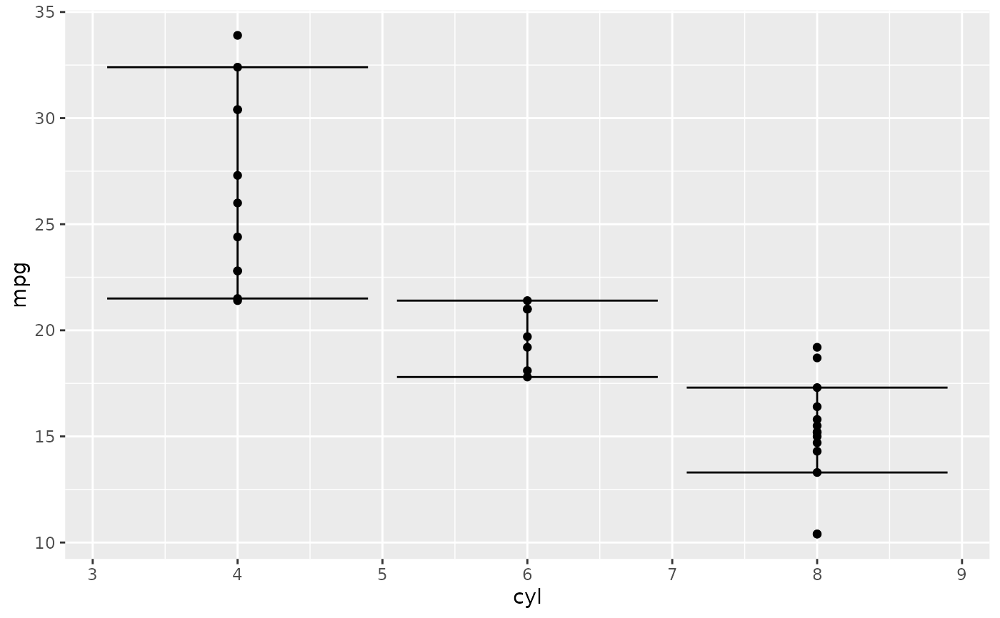

![[Stable]](figures/lifecycle-stable.svg)
Convenient function for calculating the median confidence interval. It can be used as a ggplot helper
function for plotting.
Examples
stat_median_ci(sample(10), gg_helper = FALSE)
#> median_ci_lwr median_ci_upr
#> 2 9
#> attr(,"conf_level")
#> [1] 0.9785156
p <- ggplot2::ggplot(mtcars, ggplot2::aes(cyl, mpg)) +
ggplot2::geom_point()
p + ggplot2::stat_summary(
fun.data = stat_median_ci,
geom = "errorbar"
)
